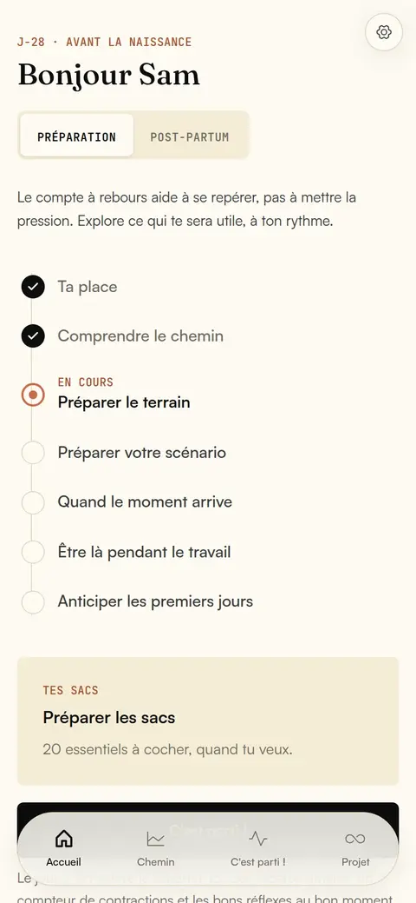
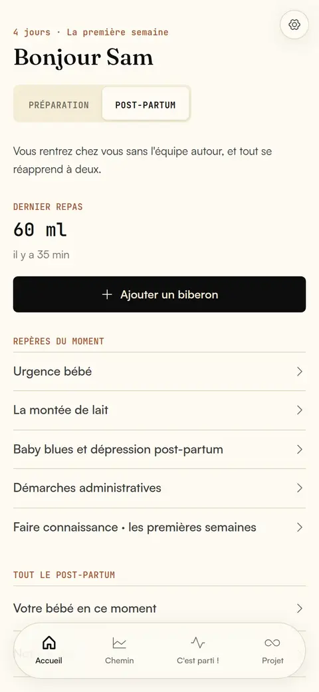
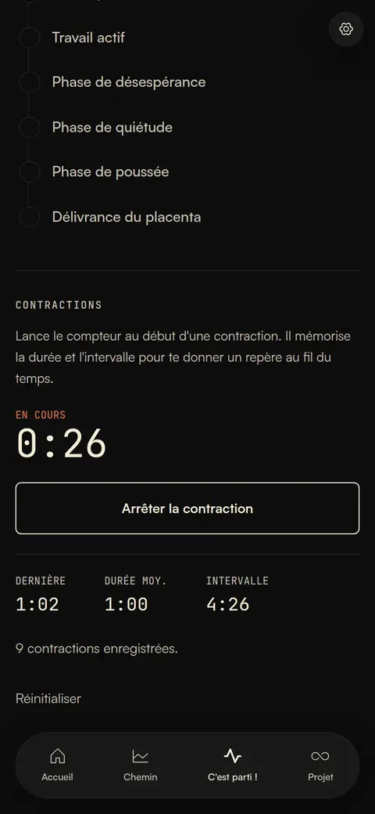
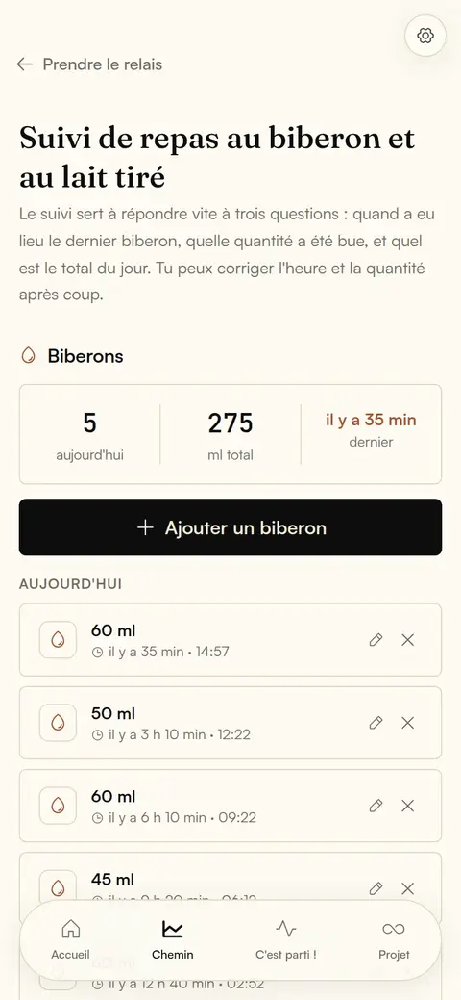
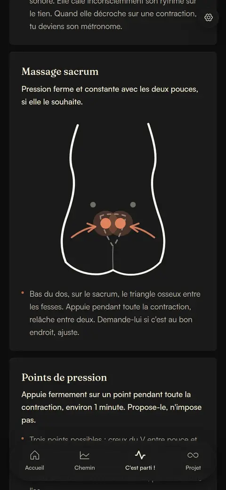
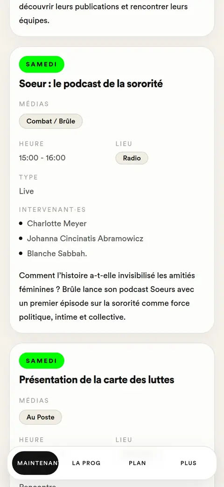
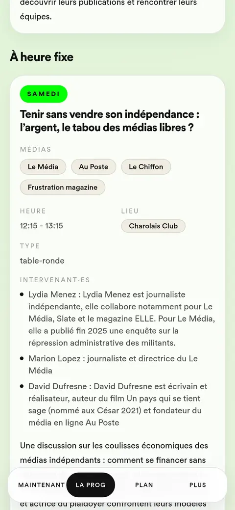
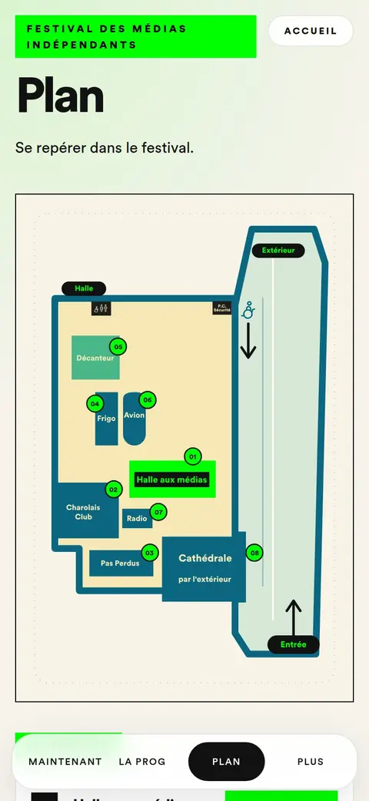
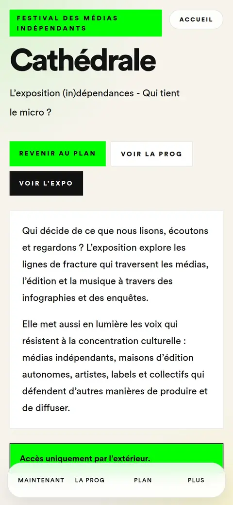
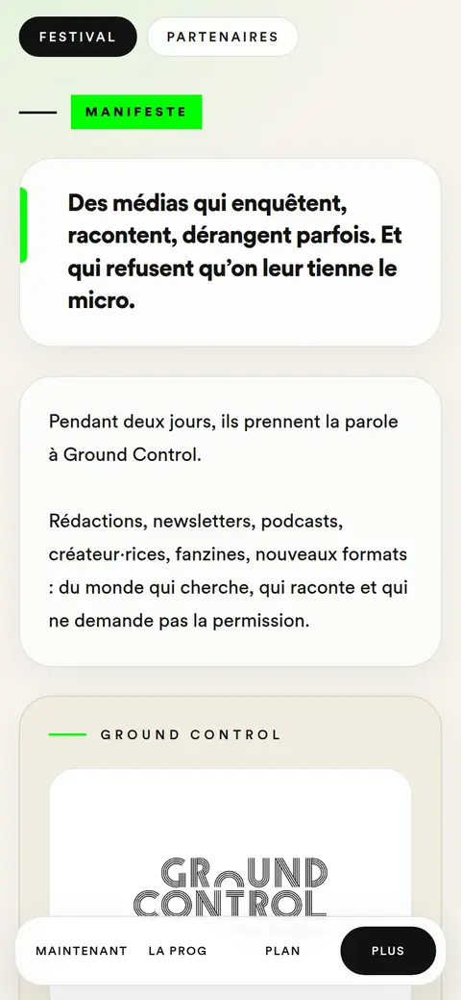

Odilon
Corby
Product Builder No-Code, IA & Communication expert
Construire l'outil, structurer le contenu, porter le message. Je conçois des outils no-code & IA, de l'idée à la mise en production, avec dix ans de stratégie éditoriale derrière : des produits qui tiennent aussi par leurs contenus et leur diffusion.

Produits





L'accompagnant arrive à l'accouchement et au post-partum avec peu de repères pensés pour lui : cours et livres s'adressent d'abord à la personne qui accouche. Mes propres notes Notion étaient trop denses : un collègue qui allait devenir père ne les a jamais lues.
Une PWA mobile, hors ligne et sans compte, en trois temps : Préparer, Jour J, Post-partum. 43 fiches, 17 cartes pour le jour J, compteur de contractions, suivi des biberons partagé à deux, rappels aux dates clés. Hébergement UE, AIPD, données sensibles gardées sur l'appareil.
MVP en production le jour du premier commit, refonte complète en septembre 2026. Je conçois et j'arbitre, le code est écrit par Claude Code sous ma direction.
Utilisée pour la naissance de mon deuxième enfant, et par le collègue qui n'avait pas lu mes notes. Depuis fin avril : environ 1 700 visites, 87 % sur mobile, 33 parcours d'accueil terminés (Umami). Prochaine étape : la relecture par une sage-femme.
stack Claude Code · React 18 · Vite 7 · Tailwind CSS · PWA · Firebase · Cloudflare Pages · Cloudflare Workers · Cloudflare D1 · Notion
naiko.appinfo brute reçue ▼ traitement éditorial ▼ validé com ── barrière avant production ▼ production ├─ site notion → make → wordpress ├─ newsletter notion → json → brevo └─ réseaux calendrier éditorial ▼ publié → archive
Les infos d'événements arrivent par mails, pièces jointes et SharePoint. Le suivi tenait dans un Excel jamais à jour : impossible de savoir ce qui manque, ce qui est validé, ce qu'il reste à produire.
Une architecture relationnelle dans Notion (événements, publications, projets, tâches) pour une équipe de six. Chaque événement suit six statuts, et rien ne part en production avant « validé com ».
Deux sorties : le site (fiche Automations) et la newsletter. Pour la newsletter, les événements d'une édition sont normalisés en JSON et injectés dans le template Brevo, jusqu'au brouillon et au BAT ; la validation reste humaine.
Calendrier éditorial et dashboard utilisés par l'équipe et consultés par la direction ; une deuxième structure du groupe demande à y entrer. Pipeline newsletter testé sur une édition réelle de dix événements. Prochaine étape : un Worker Notion à la place de la couche de test.
stack Notion · Make · Brevo · SharePoint





Pendant deux jours, le public doit savoir ce qui se passe maintenant et où. Le programme bouge jusqu'à la dernière minute, sans budget ni campagne dédiée.
Une PWA sans téléchargement : « en ce moment » en temps réel, programme, plan, pages espaces. Le programme est lu en direct dans Notion : l'équipe le corrige sans toucher au code. En ligne 2 h 14 après le premier commit, prête pour l'ouverture une semaine plus tard.
Utilisée pendant le festival, diffusée uniquement par QR codes : 30 visiteurs. Le produit a tenu, la distribution a manqué ; la prochaine édition aura une vraie campagne.
stack React · TypeScript · Vite · Tailwind CSS · React Router · Cloudflare Pages · Notion API
fmiapp.pages.devnotion · base événements │ batch (mvp, festival) ▼ make · pages projet créées │ 9 champs ACF + image à la une ▼ wordpress · pages projet │ [gc_agenda] (en production) ▼ page programmation tri par date · passés masqués
Mettre à jour le site WordPress à la main prenait du temps chaque semaine : pages de programmation, agenda hebdomadaire.
En production : un script injecté dans le site construit seul la page Programmation (tri par date, récurrents, événements passés retirés).
En MVP : un pipeline Notion → Make → WordPress qui crée les pages projet avec leurs champs et leur image. Testé sur le festival : toute la programmation publiée d'un coup.
L'agenda a tourné pendant mon congé paternité sans supervision : environ 1 h gagnée par semaine. Prochaine étape : étendre le pipeline aux événements courants, déclenché au statut « validé com ».
stack Notion · Make · WordPress · ACF · Script IA